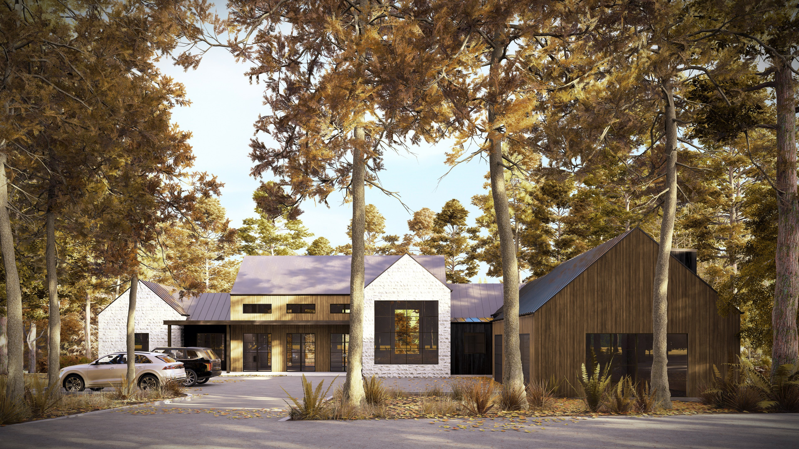
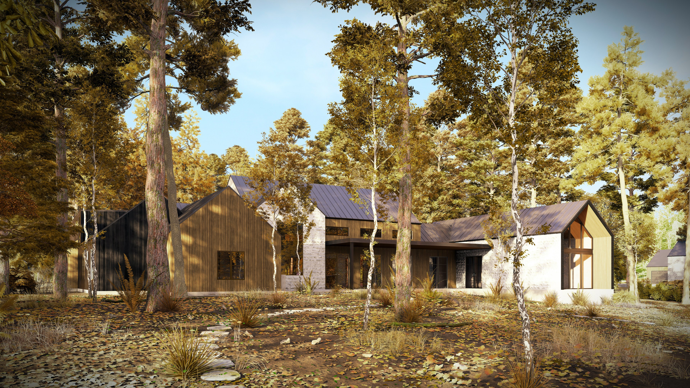
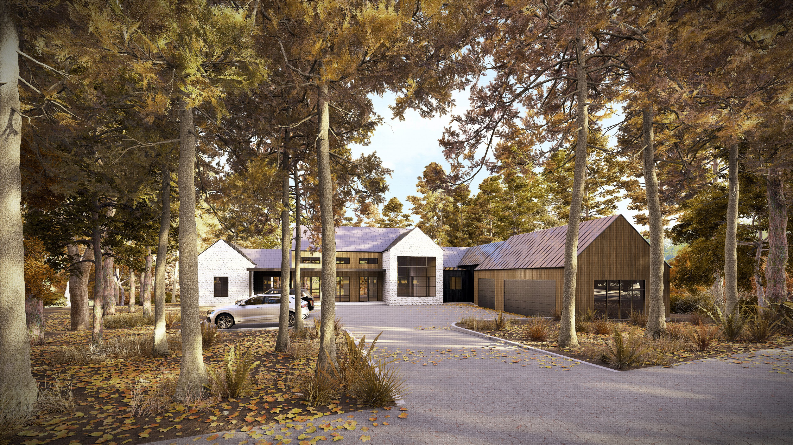
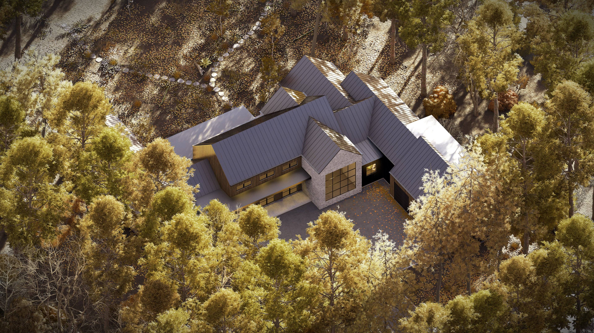
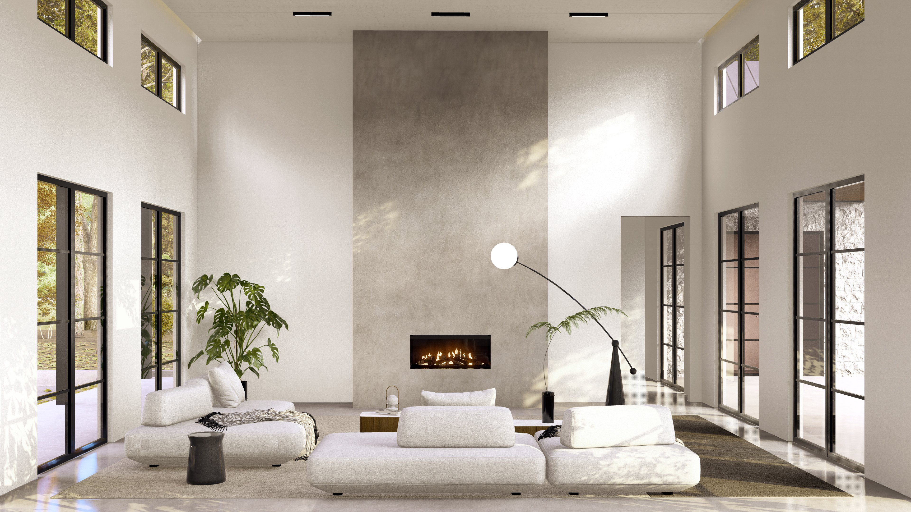
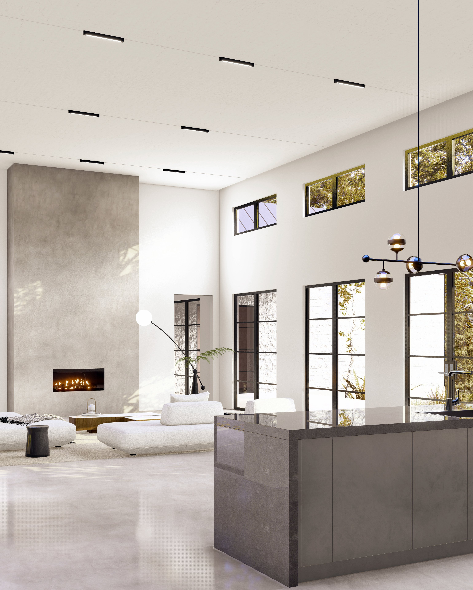
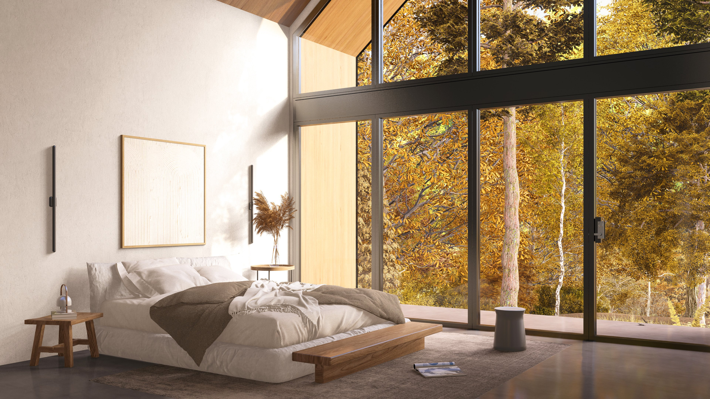

PROJECT · RESIDENTIAL · TEXAS, USA
Cedar Creek Ranch
A modern ranch-style residence that brings together contemporary architectural character and the relaxed appeal of ranch living. The project explores a strong relationship between the home, its outdoor setting, and everyday residential functions.
EXTERIOR PERSPECTIVES





INTERIOR PERSPECTIVES



FLOOR PLANS & DRAWINGS